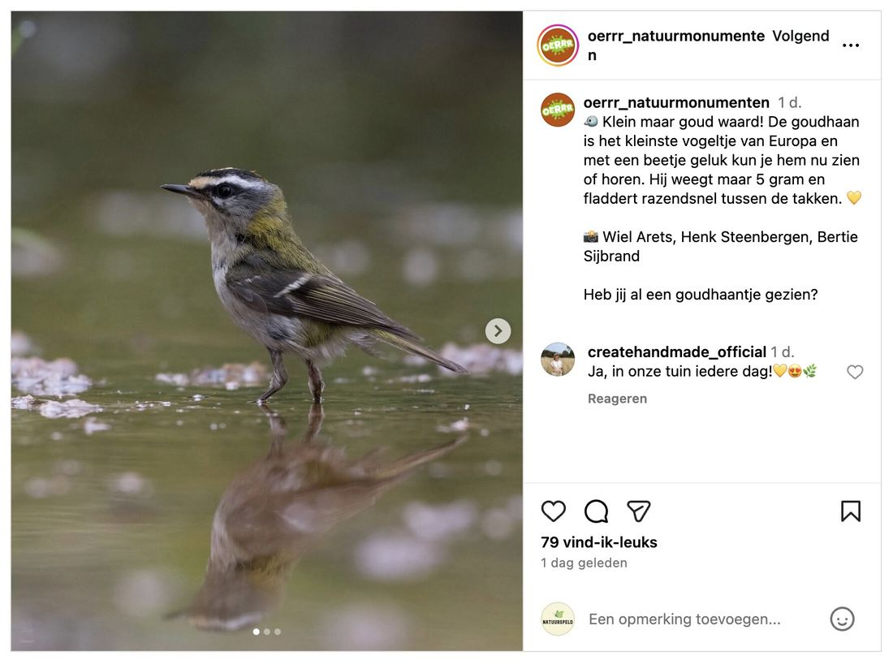
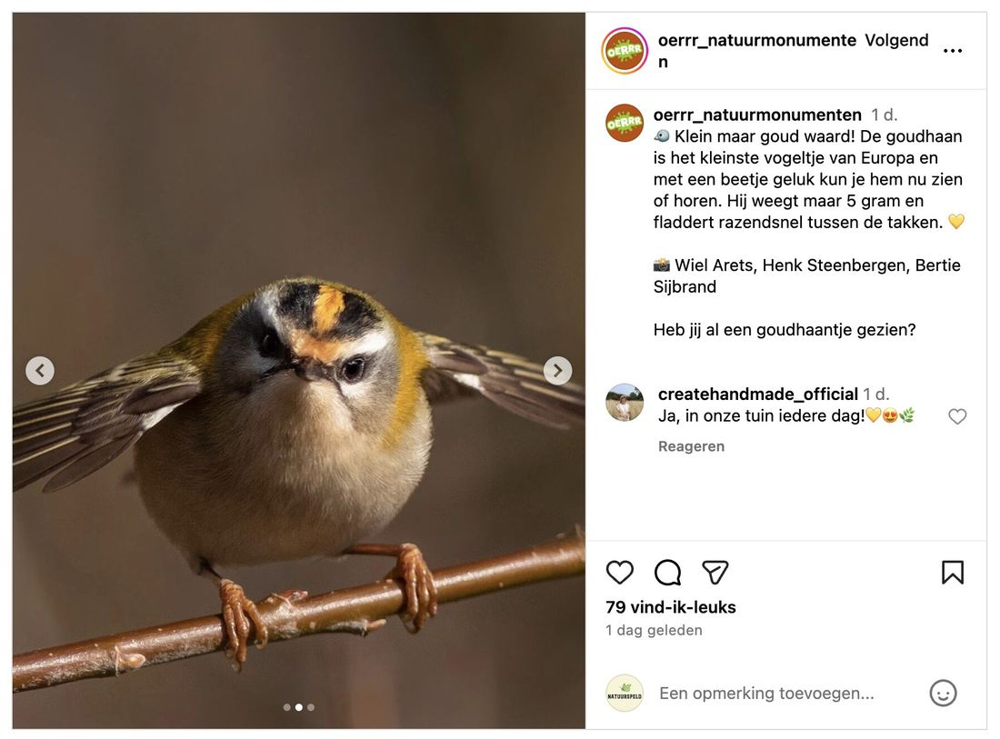
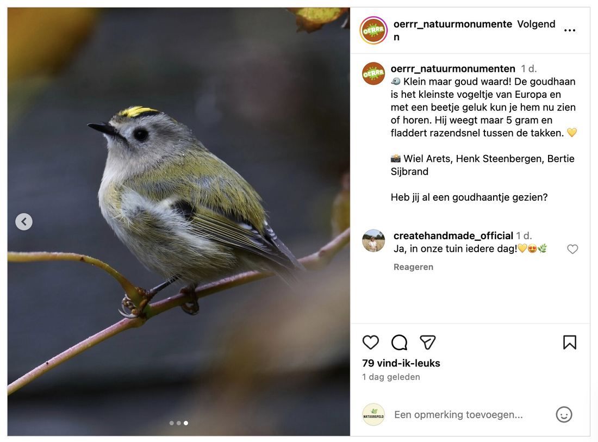

Vuurgoudhaan, geen goudhaan
- Op de foto
- Vuurgoudhaan
- Het ging over
- Goudhaan



De kleinste vogel van Europa… maar dan de verkeerde.
Vandaag zagen we weer een klassieker langskomen: een post over Goudhaan met foto’s van een Vuurgoudhaan.
Dat is alsof je een Vuurgoudhaan gebruikt om de Goudhaan uit te leggen, oh wacht..
Hoe zie je het verschil?
• Goudhaan (Regulus regulus) → geen duidelijke witte wenkbrauwstreep en zwarte oogstreep
• Vuurgoudhaan (Regulus ignicapilla) → wel een felle witte wenkbrauw en zwarte oogstreep. Veel contrastrijker.
Beide zijn erg klein, maar Goudhaan is officieel de kleinste vogel van Europa.
Leuke post hoor, maar laten we hem wél bij de juiste naam noemen.
Factcheck voordat je post, scheelt weer een post op Natuurspeld @oerrr_natuurmonumenten. Al ging het op de derde slide wél goed.